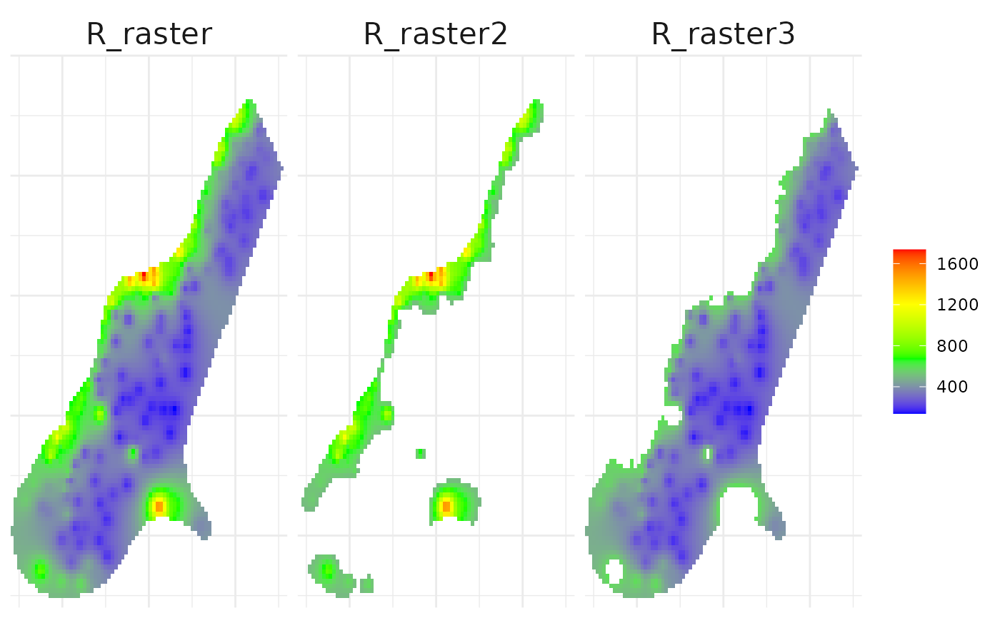
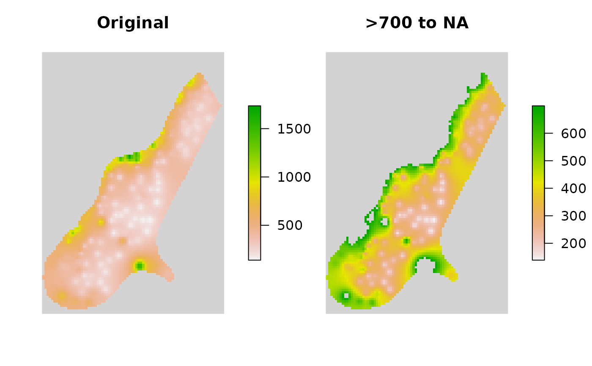
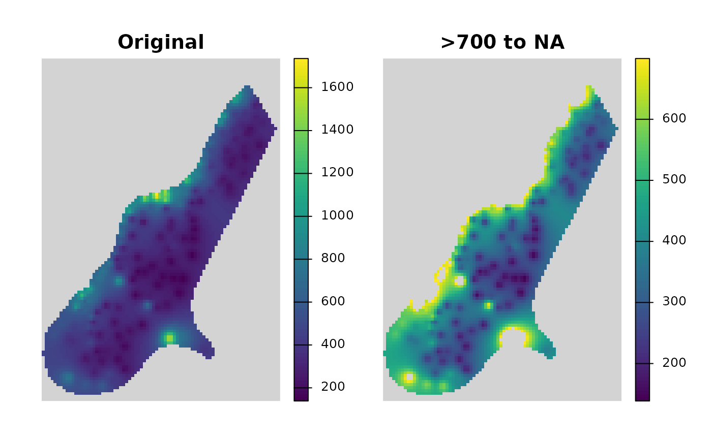

Changes values within a specified range, or greater than or less than a specific value to a new value in a vector, data.frame, or raster
Source:R/general_range_to_new_value.R
range_to_new_value.RdThis function modifies values in the input object x based on the specified
conditions. It can operate on vectors, data.frames, or RasterLayer objects.
The function allows for changing values within a specified range (between),
greater than or equals to (greater_than) or less than or equals to
(less_than) a specified value to a new value (new_value). An option to
invert the selection is also available for ranges.
Usage
range_to_new_value(
x = NULL,
between = NULL,
greater_than = NULL,
less_than = NULL,
new_value = NULL,
invert = FALSE
)Arguments
- x
A numeric
vector,data.frame,RasterLayer, orSpatRasterobject whose values are to be modified.- between
Numeric. A numeric vector of length 2 specifying the range of values to be changed or kept. If specified,
greater_thanandless_thanare ignored.- greater_than, less_than
Numeric. Threshold larger than or equal to/less than or equal to which values in
xwill be changed tonew_value. Only applied ifbetweenis not specified.- new_value
The new value to assign to the selected elements in
x.- invert
Logical. Whether to invert the selection specified by
between. IfTRUE, values outside the specified range are changed tonew_value. Default isFALSE.
Examples
library(raster)
library(terra)
par(mar = c(0.5, 0.5, 1, 2.5), oma = c(0.5, 0.5, 0.5, 1))
# ---------------------------------------------
# Vector
(VV <- seq_len(10))
#> [1] 1 2 3 4 5 6 7 8 9 10
range_to_new_value(x = VV, between = c(5, 8), new_value = NA)
#> [1] 1 2 3 4 NA NA NA NA 9 10
range_to_new_value(x = VV, between = c(5, 8), new_value = NA, invert = TRUE)
#> [1] NA NA NA NA 5 6 7 8 NA NA
# greater_than is ignored as between is specified
range_to_new_value(
x = VV, between = c(5, 8), new_value = NA, greater_than = 4)
#> [1] 1 2 3 4 NA NA NA NA 9 10
range_to_new_value(x = VV, new_value = NA, greater_than = 4)
#> [1] 1 2 3 NA NA NA NA NA NA NA
range_to_new_value(x = VV, new_value = NA, less_than = 4)
#> [1] NA NA NA NA 5 6 7 8 9 10
# ---------------------------------------------
# tibble
iris2 <- iris %>%
tibble::as_tibble() %>%
dplyr::slice_head(n = 50) %>%
dplyr::select(-Sepal.Length, -Petal.Length, -Petal.Width) %>%
dplyr::arrange(-Sepal.Width)
iris2 %>%
dplyr::mutate(
Sepal.Width.New = range_to_new_value(
x = Sepal.Width, between = c(3, 3.5),
new_value = NA, invert = FALSE),
Sepal.Width.Rev = range_to_new_value(
x = Sepal.Width, between = c(3, 3.5),
new_value = NA, invert = TRUE)) %>%
print(n = 50)
#> # A tibble: 50 × 4
#> Sepal.Width Species Sepal.Width.New Sepal.Width.Rev
#> <dbl> <fct> <dbl> <dbl>
#> 1 4.4 setosa 4.4 NA
#> 2 4.2 setosa 4.2 NA
#> 3 4.1 setosa 4.1 NA
#> 4 4 setosa 4 NA
#> 5 3.9 setosa 3.9 NA
#> 6 3.9 setosa 3.9 NA
#> 7 3.8 setosa 3.8 NA
#> 8 3.8 setosa 3.8 NA
#> 9 3.8 setosa 3.8 NA
#> 10 3.8 setosa 3.8 NA
#> 11 3.7 setosa 3.7 NA
#> 12 3.7 setosa 3.7 NA
#> 13 3.7 setosa 3.7 NA
#> 14 3.6 setosa 3.6 NA
#> 15 3.6 setosa 3.6 NA
#> 16 3.6 setosa 3.6 NA
#> 17 3.5 setosa NA 3.5
#> 18 3.5 setosa NA 3.5
#> 19 3.5 setosa NA 3.5
#> 20 3.5 setosa NA 3.5
#> 21 3.5 setosa NA 3.5
#> 22 3.5 setosa NA 3.5
#> 23 3.4 setosa NA 3.4
#> 24 3.4 setosa NA 3.4
#> 25 3.4 setosa NA 3.4
#> 26 3.4 setosa NA 3.4
#> 27 3.4 setosa NA 3.4
#> 28 3.4 setosa NA 3.4
#> 29 3.4 setosa NA 3.4
#> 30 3.4 setosa NA 3.4
#> 31 3.4 setosa NA 3.4
#> 32 3.3 setosa NA 3.3
#> 33 3.3 setosa NA 3.3
#> 34 3.2 setosa NA 3.2
#> 35 3.2 setosa NA 3.2
#> 36 3.2 setosa NA 3.2
#> 37 3.2 setosa NA 3.2
#> 38 3.2 setosa NA 3.2
#> 39 3.1 setosa NA 3.1
#> 40 3.1 setosa NA 3.1
#> 41 3.1 setosa NA 3.1
#> 42 3.1 setosa NA 3.1
#> 43 3 setosa NA 3
#> 44 3 setosa NA 3
#> 45 3 setosa NA 3
#> 46 3 setosa NA 3
#> 47 3 setosa NA 3
#> 48 3 setosa NA 3
#> 49 2.9 setosa 2.9 NA
#> 50 2.3 setosa 2.3 NA
# ---------------------------------------------
# RasterLayer / SpatRaster
grd_file <- system.file("external/test.grd", package = "raster")
R_raster <- raster::raster(grd_file)
R_terra <- terra::rast(grd_file)
# Convert values less than 500 to NA
R_raster2 <- range_to_new_value(
x = R_raster, less_than = 500, new_value = NA)
plot(
raster::stack(R_raster, R_raster2), nr = 1,
main = c("\nOriginal", "\n<500 to NA"),
box = FALSE, axes = FALSE, legend.width = 2, colNA = "lightgrey",
xaxs = "i", yaxs = "i")

R_terra2 <- range_to_new_value(x = R_terra, less_than = 500, new_value = NA)
plot(
c(R_terra, R_terra2), nr = 1, main = c("\nOriginal", "\n<500 to NA"),
box = FALSE, axes = FALSE, colNA = "lightgrey", xaxs = "i", yaxs = "i")
# Convert values greater than 700 to NA
R_raster2 <- range_to_new_value(
x = R_raster, greater_than = 700, new_value = NA)
plot(
raster::stack(R_raster, R_raster2), nr = 1,
main = c("\nOriginal", "\n>700 to NA"),
box = FALSE, axes = FALSE, legend.width = 2, colNA = "lightgrey",
xaxs = "i", yaxs = "i")

R_terra2 <- range_to_new_value(
x = R_terra, greater_than = 700, new_value = NA)
plot(
c(R_terra, R_terra2), nr = 1, main = c("\nOriginal", "\n>700 to NA"),
box = FALSE, axes = FALSE, colNA = "lightgrey", xaxs = "i", yaxs = "i")
